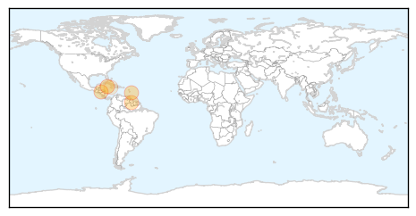
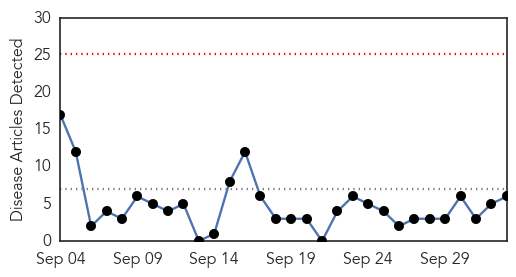
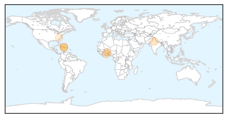
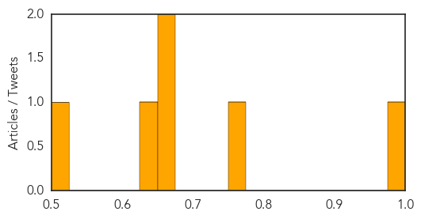

Chikungunya
30-Day Web Trend
0 alerts, 2 warnings
30-Day Twitter Trend
0 alerts, 0 warnings

Article Locations
Article Confidences

Top Articles:
- 0.999
- Chikungunya cases more than double
- 0.969
- Honduras Declares State of Emergency Near Tegucigalpa Due to Chikungunya
- 0.953
- More cases of virus -- NationNews Barbados -- Local, Regional and International News nationnews.com
- 0.911
- Cayman Islands: Eleven Test Positive For ChikV
- 0.504
- The indignity of poverty
Top Tweets:
-
No tweets found for Oct 03, 2014
Cholera
30-Day Web Trend
0 alerts, 0 warnings

30-Day Twitter Trend
0 alerts, 0 warnings
Article Locations
Article Confidences
Top Articles:
- 0.999
- Haiti bans its citizens from UN mission against Ebola
- 0.774
- How Climate Change Will Lead To Death
- 0.661
- Ghana, Business Advice, Jobs, News, Business Directory, Real Estate, Finance, Forms, Auto
- 0.654
- 5 Surprising Ways Climate Change Can Kill You
- 0.645
- August 19, 2014
- 0.524
- Breaking News & Views for the Progressive Community
Top Tweets:
-
No tweets found for Oct 03, 2014